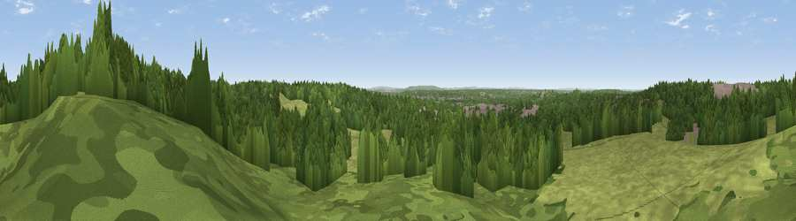

Viewpoint near Crowthorne
#32462 in England · top 26% of its area beats it · near CrowthorneWhere it is
The exact computed spot (SU 85775 63225). Click the marker for map links.
The view, rendered

A 360° render of this exact spot computed from the terrain model, tree cover and land cover — summer colours, afternoon light, calibrated against photographs of famous viewpoints. Real trees, hedges and buildings will differ in detail.
The panorama
Grey silhouette: terrain skyline in each direction (720 bearings, Earth curvature and refraction included). Dashed green: skyline with trees (+15 m) and buildings (+8 m) as obstacles. Blue strip: how far the ground is visible on each bearing.
Where the view opens
Wedge length = distance to the farthest visible ground on that bearing (vegetation-aware). Rings at 10, 25 and 50 km.
What fills the view
59% woodland · 35% grassland · 6% built-up
Angular shares of the visible panorama (visual magnitude), not map area. Landscape diversity 0.38 (0–1 Shannon).
Key numbers
More beautiful places nearby
The staircase of upgrades: each row has a higher view potential than everything closer. Driving times are estimates from straight-line distance, calibrated against real road routing — check an actual route before setting out.
| Place | Direction | Drive | Score |
|---|---|---|---|
| Viewpoint near Crowthorne | W · 2 km | ~6 min | 45.4 |
| High Curley Hill | ESE · 6 km | ~12 min | 49.7 |
| Viewpoint near Upper Hale | S · 13 km | ~24 min | 58.3 |
| Viewpoint near Puttenham | SSE · 16 km | ~28 min | 62.0 |
| Viewpoint near Wanborough | SSE · 17 km | ~30 min | 65.5 |
| Viewpoint near Compton | SE · 18 km | ~31 min | 66.7 |
| Viewpoint near Hascombe | SSE · 28 km | ~45 min | 70.1 |
| Viewpoint near Watlington | NNW · 34 km | ~52 min | 70.6 |
51.36163, -0.76941 · source: screening · position refined by local search. Computed location — check access rights before visiting.